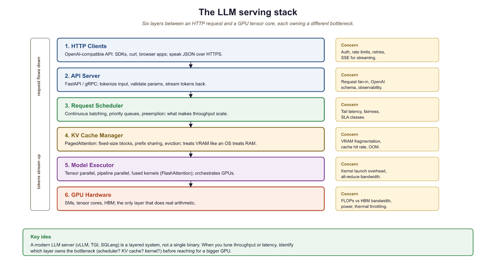

Serving an LLM in production is 10% machine learning and 90% convincing the infrastructure that thousands of users can share one very expensive GPU without anyone noticing the wait.
Quant, Queue Wrangling AI Agent
From model weights to production endpoint. A trained model is just a collection of tensors on disk. Turning it into a responsive, scalable API requires specialized serving infrastructure that handles continuous batching, KV cache management, request scheduling, model parallelism, and hardware-specific kernel optimization. For production deployment patterns and safety considerations, see Chapter 47. Building on the quantization (Section 9.1), KV cache (Section 9.3), and speculative decoding (Section 9.4) techniques covered earlier in this chapter, this section surveys the major serving frameworks available today, explains their architectural differences, and provides practical guidance for choosing the right tool for your deployment scenario. We conclude with a benchmarking methodology so you can make data-driven decisions for your own workloads.
Prerequisites
This section ties together all previous Chapter 9: Inference Optimization & Efficient Serving concepts: quantization (Section 9.1), KV cache management (Section 9.3), and speculative decoding (Section 9.4). Serving frameworks combine these techniques. Understanding of continuous batching requires familiarity with autoregressive generation from Section 4.1.
For a hands-on tutorial deploying models with vLLM, TGI, and SGLang, see Appendix K: Inference Serving.
9.5.1 The Serving Stack
PagedAttention works because the KV cache has the same access pattern as virtual memory: many concurrent requests of unknown final length, each growing one page at a time, all needing to share a fixed physical pool. Kwon et al. (2023) explicitly modeled this on the OS paging algorithms from the 1960s. The 2-4x throughput gain comes from eliminating two waste sources: internal fragmentation (preallocating worst-case KV lengths per request) and external fragmentation (free slots stranded between active requests). Stating that PagedAttention is "virtual memory for the KV cache" (not just an LLM-specific trick) lets readers transfer all their OS-paging intuitions (copy-on-write, swapping, page-sharing for prefix caching) directly.

An LLM serving system sits between the raw model weights and the HTTP API that clients consume. It manages several critical responsibilities that are absent from a naive model.generate() call:
- Request scheduling: Ordering incoming requests, managing priority queues, and enforcing rate limits.
- Continuous batching: Dynamically adding and removing sequences from the active batch at each iteration (as covered in Section 9.3).
- KV cache management: Allocating, sharing, and evicting KV cache blocks using PagedAttention or similar techniques.
- Model parallelism: Distributing model weights across multiple GPUs using tensor parallelism (splitting layers) or pipeline parallelism (splitting stages).
- Kernel optimization: Using hardware-specific fused kernels (FlashAttention, custom GEMM) to maximize throughput.
- API layer: Exposing an OpenAI-compatible HTTP endpoint with streaming support (the client-side perspective is covered in Section 11.1).
Who: A DevOps engineer at an AI platform company building a unified API gateway that routes requests to different models based on task type.
Situation: The gateway needed to serve three models simultaneously (Llama-3.1 8B for chat, Llama-3.1 70B for complex reasoning, and a code-specialized 13B model), sharing a pool of 16 A100 GPUs.
Problem: Using Hugging Face's text-generation-inference (TGI) for all models resulted in suboptimal GPU utilization (average 35%) and high P99 latency (8.2 seconds) during peak traffic, because each model instance reserved GPUs exclusively.
Dilemma: vLLM offered better throughput via PagedAttention but lacked built-in multi-model support at the time. SGLang promised even higher throughput with RadixAttention but was newer and less battle-tested. TensorRT-LLM offered maximum single-model performance but required NVIDIA-specific compilation.
Decision: They deployed vLLM with separate instances per model, fronted by a custom routing proxy that directed requests based on task type and managed GPU allocation dynamically.
How: The team ran a structured benchmark: 1,000 requests per model with mixed prompt lengths (128 to 4,096 tokens) and output lengths (64 to 2,048 tokens), measuring throughput (tokens/second), time-to-first-token (TTFT), and P99 latency across vLLM, TGI, and SGLang.
Result: vLLM achieved 2.1x higher throughput than TGI for the 70B model and 1.4x for the 8B model. P99 latency dropped from 8.2 to 3.1 seconds. GPU utilization rose to 62%. SGLang matched vLLM on throughput and showed 15% better prefix cache hit rates for the chat model.
Lesson: Always benchmark serving frameworks on your actual workload distribution (prompt lengths, output lengths, concurrency), not just on synthetic benchmarks. The best framework depends on your specific traffic patterns.

9.5.2 vLLM
vLLM went from a UC Berkeley research project to the default serving framework for the open-source LLM community in under a year. Its PagedAttention paper was published in 2023, and by 2024 it was serving models at companies ranging from startups to Fortune 500 firms. In the LLM world, adoption timelines are measured in months, not years.
vLLM (Kwon et al., 2023) is the most widely adopted open-source LLM serving framework. Its core innovation is PagedAttention (covered in Section 9.3), which enables near-zero-waste KV cache memory management. Beyond PagedAttention, vLLM provides continuous batching, tensor parallelism, prefix caching, speculative decoding support, and an OpenAI-compatible API server. By 2026 vLLM ships chunked prefill, prefix caching, and disaggregated prefill/decode (separating the compute-bound prefill phase from the memory-bound decode phase onto different GPUs) by default; SGLang and TensorRT-LLM provide comparable feature sets.
The throughput advantage of vLLM over a naive serving stack is best understood through the KV-cache memory budget. Per request, a transformer with $L$ layers, $H$ KV heads per layer, head dimension $d_h$, sequence length $T$, and $b$ bytes per element (e.g., $b = 2$ for FP16) consumes
$$\text{KV bytes} \;=\; 2 \cdot L \cdot H \cdot d_h \cdot T \cdot b$$
bytes (factor 2 for keys and values). For Llama-3 8B at $T = 4096$ this is roughly 2 GB per request; with GQA-grouped heads the constant drops, but per-request KV still dominates GPU memory. Naive batching pre-allocates the maximum context length for every slot, wasting up to 60-80% of memory on padding. PagedAttention treats KV as paged virtual memory in fixed-size blocks (16 tokens by default), allocating blocks only as the sequence grows; the resulting fragmentation falls below 4%, so a vLLM instance can pack roughly $4\times$ more concurrent requests onto the same GPU than a static-allocation server.
Key features:
- PagedAttention: Block-based KV cache allocation with copy-on-write for shared prefixes.
- Continuous batching: Iteration-level scheduling that adds new requests as soon as GPU slots become available.
- Quantization support: GPTQ, AWQ, FP8, and GGUF formats.
- Tensor parallelism: Splits model layers across GPUs for large models.
- OpenAI-compatible API: Drop-in replacement for OpenAI endpoints with
/v1/completionsand/v1/chat/completions.
Spinning up vLLM is a one-line CLI launch or four lines of Python. Pass tensor_parallel_size to shard across multiple GPUs, and enable_prefix_caching=True to share KV blocks across requests with overlapping prompts. The OpenAI-compatible server makes vLLM a drop-in replacement for OpenAI clients during local development.
Show code
pip install vllm
from vllm import LLM, SamplingParams
llm = LLM(model="meta-llama/Llama-3.1-70B-Instruct",
tensor_parallel_size=4, enable_prefix_caching=True,
gpu_memory_utilization=0.9)
out = llm.generate(["Write a haiku about GPUs."], SamplingParams(max_tokens=64))# Example 1: Launch vLLM server and benchmark throughput
# Terminal: Start the vLLM server
# $ python -m vllm.entrypoints.openai.api_server \
# --model meta-llama/Llama-3.1-8B-Instruct \
# --dtype float16 \
# --max-model-len 8192 \
# --gpu-memory-utilization 0.90 \
# --enable-prefix-caching \
# --port 8000
# Python: Benchmark with concurrent requests
import asyncio
import aiohttp
import time
import json
async def send_request(session, url, prompt, max_tokens=128):
payload = {
"model": "meta-llama/Llama-3.1-8B-Instruct",
"messages": [{"role": "user", "content": prompt}],
"max_tokens": max_tokens,
"temperature": 0.7,
}
t0 = time.perf_counter()
async with session.post(url, json=payload) as resp:
result = await resp.json()
elapsed = time.perf_counter() - t0
n_tokens = result["usage"]["completion_tokens"]
return n_tokens, elapsed
async def benchmark(concurrency=16, total_requests=64):
url = "http://localhost:8000/v1/chat/completions"
prompts = [
"Explain quantum entanglement simply.",
"Write a Python function to merge two sorted lists.",
"What causes the northern lights?",
"Describe the water cycle in four steps.",
]
connector = aiohttp.TCPConnector(limit=concurrency)
async with aiohttp.ClientSession(connector=connector) as session:
tasks = [
send_request(session, url, prompts[i % len(prompts)])
for i in range(total_requests)
]
t_start = time.perf_counter()
results = await asyncio.gather(*tasks)
t_total = time.perf_counter() - t_start
total_tokens = sum(r[0] for r in results)
latencies = [r[1] for r in results]
print(f"Concurrency: {concurrency}")
print(f"Total requests: {total_requests}")
print(f"Total time: {t_total:.2f}s")
print(f"Total tokens: {total_tokens}")
print(f"Throughput: {total_tokens/t_total:.1f} tok/s")
print(f"Avg latency: {sum(latencies)/len(latencies):.2f}s")
print(f"P50 latency: {sorted(latencies)[len(latencies)//2]:.2f}s")
print(f"P99 latency: {sorted(latencies)[int(0.99*len(latencies))]:.2f}s")
asyncio.run(benchmark(concurrency=16, total_requests=64))# Example 4: Comprehensive benchmarking script
import asyncio
import aiohttp
import time
import numpy as np
from dataclasses import dataclass
@dataclass
class RequestResult:
ttft: float # time to first token (seconds)
total_time: float # end-to-end latency
output_tokens: int # number of generated tokens
tpot: float # time per output token (after first)
async def benchmark_streaming(url, model, prompt, max_tokens=128):
"""Measure TTFT and TPOT via streaming response."""
payload = {
"model": model,
"messages": [{"role": "user", "content": prompt}],
"max_tokens": max_tokens,
"temperature": 0.7,
"stream": True,
}
t0 = time.perf_counter()
ttft = None
token_count = 0
async with aiohttp.ClientSession() as session:
async with session.post(url, json=payload) as resp:
async for line in resp.content:
decoded = line.decode().strip()
if decoded.startswith("data: ") and decoded != "data: [DONE]":
if ttft is None:
ttft = time.perf_counter() - t0
token_count += 1
total = time.perf_counter() - t0
decode_time = total - (ttft or total)
tpot = decode_time / max(token_count - 1, 1)
return RequestResult(ttft=ttft or 0, total_time=total,
output_tokens=token_count, tpot=tpot)
async def run_benchmark(concurrency_levels=[1, 4, 8, 16, 32]):
url = "http://localhost:8000/v1/chat/completions"
model = "meta-llama/Llama-3.1-8B-Instruct"
prompt = "Describe the process of photosynthesis."
print(f"{'Concur':>7} {'Throughput':>11} {'Avg TTFT':>10} "
f"{'P50 TTFT':>10} {'Avg TPOT':>10} {'P99 Lat':>10}")
print("-" * 62)
for c in concurrency_levels:
n_requests = max(c * 4, 16)
sem = asyncio.Semaphore(c)
async def bounded_req():
async with sem:
return await benchmark_streaming(url, model, prompt)
tasks = [bounded_req() for _ in range(n_requests)]
t0 = time.perf_counter()
results = await asyncio.gather(*tasks)
wall_time = time.perf_counter() - t0
total_tok = sum(r.output_tokens for r in results)
ttfts = [r.ttft for r in results]
lats = [r.total_time for r in results]
tpots = [r.tpot for r in results]
print(f"{c:>7} {total_tok/wall_time:>10.1f}/s "
f"{np.mean(ttfts)*1000:>9.0f}ms "
f"{np.percentile(ttfts, 50)*1000:>9.0f}ms "
f"{np.mean(tpots)*1000:>9.0f}ms "
f"{np.percentile(lats, 99):>9.2f}s")
asyncio.run(run_benchmark())
The most common mistake teams make when choosing a serving framework is optimizing for the wrong metric. If your workload is latency-sensitive (real-time chat, code completion), optimize for time-to-first-token (TTFT) and per-token latency. If your workload is throughput-sensitive (batch processing, evaluation pipelines), optimize for total tokens per second across concurrent requests. These two objectives can conflict: techniques like continuous batching and large batch sizes increase throughput but also increase per-request latency. The benchmarking methodology in this section helps you measure the metrics that matter for your specific use case. For guidance on when to self-host versus use an API provider, see Section 13.3.
Spin up vllm serve meta-llama/Llama-3.1-8B-Instruct on a single GPU, then benchmark with vllm bench serve at concurrency levels {1, 4, 16, 64}. Plot TTFT (p50) and total tokens/sec on the same axes. Identify the concurrency level where TTFT crosses 500 ms; that is your operating ceiling for an interactive chat workload.
Answer Sketch
Typical 8B-on-A100 numbers: concurrency 1 gives TTFT ≈ 80 to 110 ms and 80 tok/s. Concurrency 16 gives TTFT ≈ 340 ms and 630 tok/s. Concurrency 64 gives TTFT ≈ 700+ ms and 900 tok/s but blows the interactive budget. The crossover above 500 ms TTFT typically lands between concurrency 24 and 32 on an A100; lower for shorter prompts, higher for longer. Operate just below the crossover for chat, above it for batch.
For Llama-3.1-8B (n_layers=32, n_kv_heads=8, head_dim=128, FP16), compute the KV cache memory per token, then per request for a 4096-token context. How many concurrent 4K-context requests fit in a 40 GB GPU after subtracting the 16 GB model weights?
Answer Sketch
Per token: 2 (K and V) x 32 layers x 8 KV heads x 128 dim x 2 bytes = 131,072 bytes ≈ 128 KB. Per 4096-token request: 128 KB x 4096 ≈ 512 MB. With 24 GB free (40 - 16), about 48 simultaneous 4K requests fit. This is the upper bound on vLLM's effective concurrency before PagedAttention reuse kicks in.
What's Next?
In the next part of this section, Section 9.6: Serving Runtimes: SGLang, TGI, TensorRT & Edge, the llm serving stack and a deep dive into vllm, the most widely deployed open-source llm serving framework.